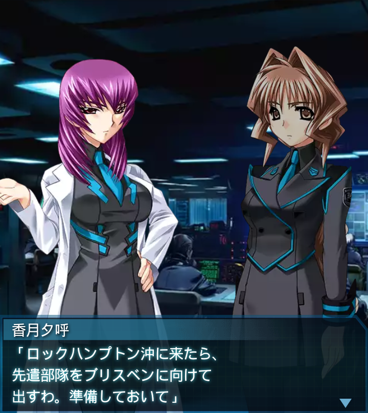

オーストラリア・グレートバリアリーフ
『誰』
「グレートバリアリーフ…。
こんな世界でも綺麗ですね。
無事で良かった…」
香月夕呼
「豪州は世界の食料庫よ。世界の
軍需工場たる南米と共に、人類の
要、無事でなきゃ困るわよ」
「司令…ケアンズ沖の珊瑚礁上に
複数のＢＥＴＡが確認されたとの
報告が。残念ながら豪州は…」
香月夕呼
「…楽観なんてガラにも無いこと
するんじゃなかったわ」
『誰』
「司令！すぐに出撃命令を！
ＢＥＴＡを叩かなければ――」
香月夕呼
「南下が優先よ。『誰』、
艦の進路上にいるＢＥＴＡだけを
叩きなさい」
『誰』
「…り、了解！
確かに、これ以上戦力を失う
ような真似はできないか…」
香月夕呼
「ＢＥＴＡの様子は？」
神宮司まりも
「追ってくる気配はありません。
海上を移動していることが
奏功しているのかもしれません」
『誰』
「奴らは人間や戦術機を優先的に
襲う。だが俺達が海上にいる事で
襲撃の難易度が上がったから…」

香月夕呼
「そんな単純な話かしら。ま、
いずれにしても幸運だったわ。
さっさと進むわよ」

香月夕呼
「ロックハンプトン沖に来たら、
先遣部隊をブリスベンに向けて
出すわ。準備しておいて」
神宮司まりも
「了解！ブリスベンでどこまで
補給が可能か、速やかに調査し
報告させます！」